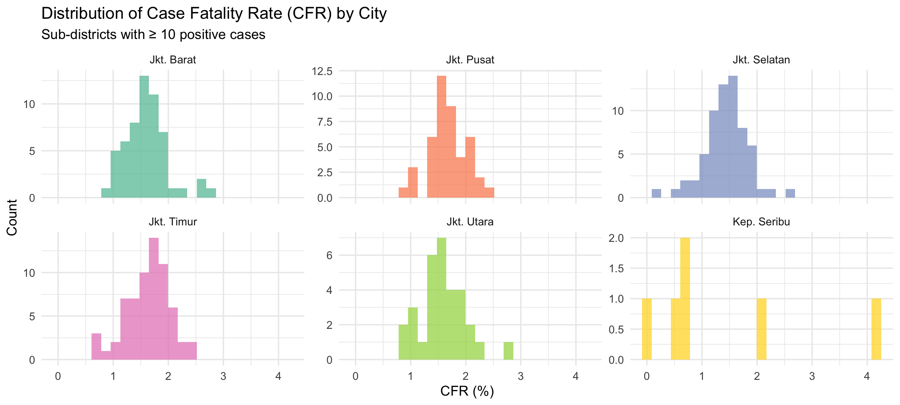
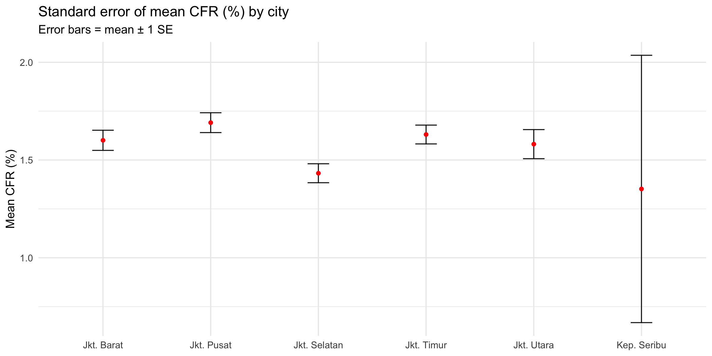
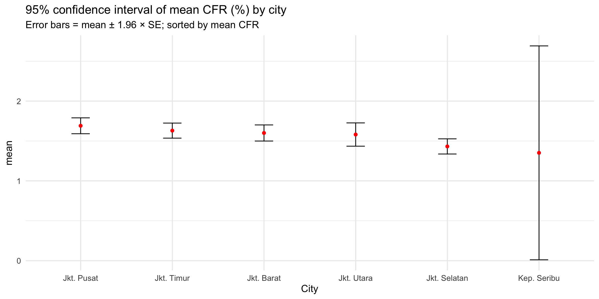
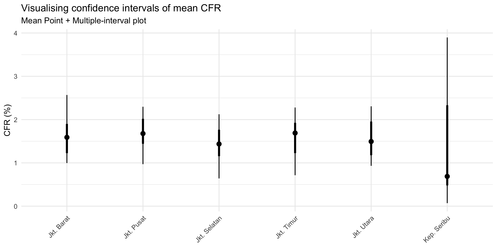
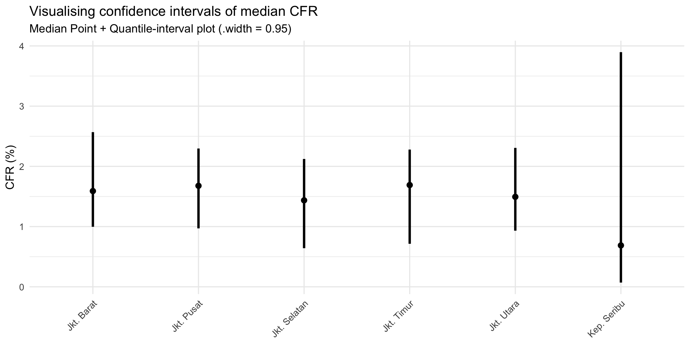
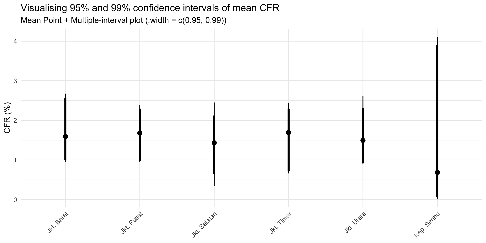
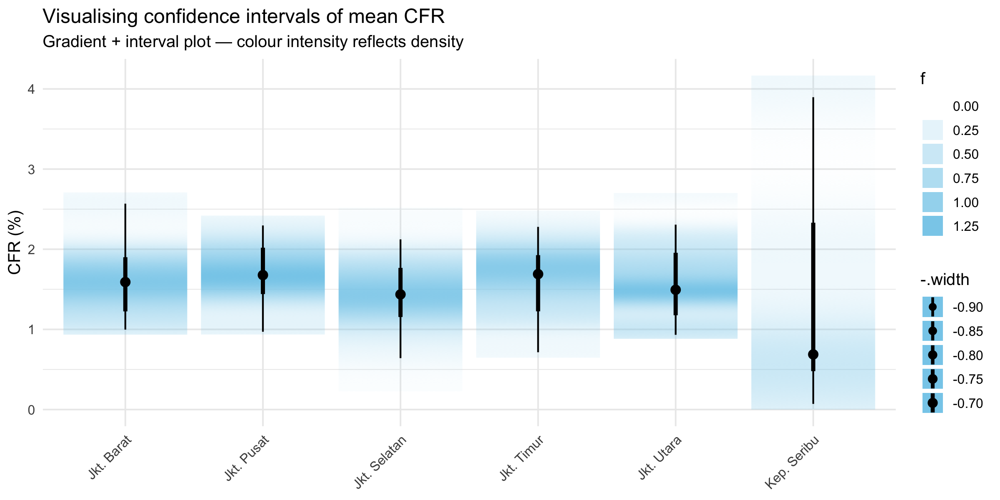
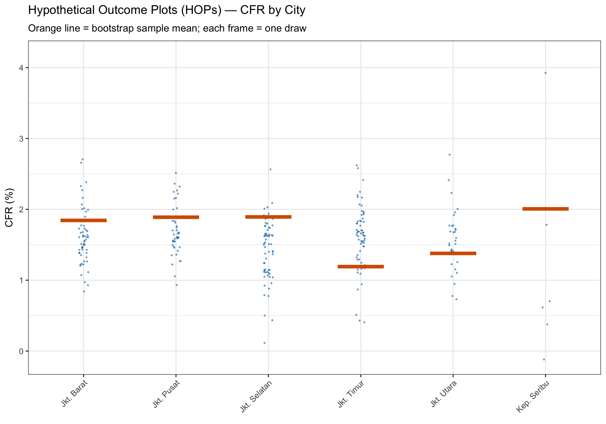

pacman::p_load(
tidyverse,
plotly,
crosstalk,
DT,
ggdist,
ggridges,
colorspace,
gganimate,
ungeviz,
janitor,
scales,
knitr,
kableExtra
)
# ungeviz must be installed once via:
# devtools::install_github("wilkelab/ungeviz")Hands-on Exercise 4c
Visualising Uncertainty — Error Bars, ggdist & HOPs
1 Visualising Uncertainty — Error Bars, ggdist & HOPs
Welcome! Today, let’s learn visualising uncertainty is a modern and essential skill in statistical graphics. Applied to DKI Jakarta COVID-19 sub-district data, this exercise covers:
- Plotting standard error bars and confidence interval bars with
ggplot2 - Building interactive error bars via
ggplot2+plotly+crosstalk+DT - Creating advanced visualisations with
ggdist— point intervals and gradient intervals - Generating animated Hypothetical Outcome Plots (HOPs) with
ungeviz+gganimate
Important
Key distinction: The uncertainty of a point estimate (how reliable is the mean?) is not the same as variation in the sample (how spread are individual values?). All techniques here address the former.
2 Getting Started
2.1 Installing and Loading Packages
Packages used in this exercise:
tidyverse— data wrangling andggplot2plotly— interactive plotsgganimate— animationDT— interactive HTML tablescrosstalk— cross-widget linked brushing and filteringggdist— distribution and uncertainty visualisation
2.2 Importing and Preparing Data
The dataset COVID-19_DKI_Jakarta.csv contains sub-district-level COVID-19 case counts across six cities in DKI Jakarta. Case Fatality Rate (CFR) — the proportion of confirmed cases resulting in death — is the focal variable throughout this exercise.
covid_raw <- read_csv("data/COVID-19_DKI_Jakarta.csv")
covid <- covid_raw %>%
janitor::clean_names() %>%
rename(id = sub_district_id, subdistrict = sub_district) %>%
mutate(
cfr = if_else(positive > 0, death / positive * 100, NA_real_),
city_label = case_when(
str_detect(toupper(city), "SELATAN") ~ "Jkt. Selatan",
str_detect(toupper(city), "UTARA") ~ "Jkt. Utara",
str_detect(toupper(city), "BARAT") ~ "Jkt. Barat",
str_detect(toupper(city), "PUSAT") ~ "Jkt. Pusat",
str_detect(toupper(city), "TIMUR") ~ "Jkt. Timur",
str_detect(toupper(city), "SERIBU") ~ "Kep. Seribu",
TRUE ~ city
)
)
# Retain only sub-districts with >= 10 positive cases for reliable CFR
covid_cfr <- covid %>% filter(!is.na(cfr), positive >= 10)3 Data Exploration
Before applying any uncertainty technique, we need to understand two properties of the data: how many sub-districts each city has and the shape of CFR distributions. These directly determine how wide every interval will be and whether the mean is even a suitable summary.
3.1 Summary Statistics by City
group_by(), summarise(), and mutate() derive the summary table — the same pipeline powering all ggplot2 error bar plots that follow.
- n — sub-district count (governs interval width)
- mean, sd — point estimate and spread of CFR
- se =
sd / sqrt(n - 1)— precision of the mean
cfr_sum <- covid_cfr %>%
group_by(city_label) %>%
summarise(
n = n(),
mean = mean(cfr, na.rm = TRUE),
sd = sd(cfr, na.rm = TRUE)
) %>%
mutate(se = sd / sqrt(n - 1))
knitr::kable(cfr_sum, format = "html", digits = 2,
caption = "CFR summary statistics by city (sub-districts with ≥ 10 positive cases)") %>%
kable_styling(bootstrap_options = c("striped", "hover"), full_width = FALSE)| city_label | n | mean | sd | se |
|---|---|---|---|---|
| Jkt. Barat | 56 | 1.60 | 0.38 | 0.05 |
| Jkt. Pusat | 44 | 1.69 | 0.33 | 0.05 |
| Jkt. Selatan | 65 | 1.43 | 0.39 | 0.05 |
| Jkt. Timur | 65 | 1.63 | 0.38 | 0.05 |
| Jkt. Utara | 31 | 1.58 | 0.41 | 0.07 |
| Kep. Seribu | 6 | 1.35 | 1.53 | 0.68 |
3.2 Distribution of CFR by City
Show code
ggplot(covid_cfr, aes(x = cfr, fill = city_label)) +
geom_histogram(bins = 25, alpha = 0.75, position = "identity") +
facet_wrap(~city_label, scales = "free_y", nrow = 2) +
scale_fill_brewer(palette = "Set2") +
labs(
title = "Distribution of Case Fatality Rate (CFR) by City",
subtitle = "Sub-districts with ≥ 10 positive cases",
x = "CFR (%)", y = "Count"
) +
theme_minimal(base_size = 11) +
theme(legend.position = "none")
NoteWhat I Learned
- Unequal sample sizes are immediately clear: Jakarta Timur has many sub-districts; Kepulauan Seribu has very few. This single fact will explain why Kepulauan Seribu produces wider intervals in every technique that follows.
- All distributions are right-skewed: the mean is pulled up by a handful of high-CFR sub-districts, making it a poor summary. This motivates switching to medians in the
ggdistsections. - This EDA is the opening act of a continuous story — every interval we plot next is a direct answer to what we see here.
4 Visualising Uncertainty with ggplot2
A point estimate is a single number such as a mean. Uncertainty is expressed as standard error, confidence interval, or credible interval. The cfr_sum table above feeds all three plots in this section.
4.1 Standard Error Bars
Error bars use the formula mean ± SE. For geom_point(), stat = "identity" is required because we are plotting pre-computed values, not raw observations.
Show code
ggplot(cfr_sum) +
geom_errorbar(
aes(x = city_label, ymin = mean - se, ymax = mean + se),
width = 0.2, colour = "black", alpha = 0.9, linewidth = 0.5
) +
geom_point(
aes(x = city_label, y = mean),
stat = "identity", color = "red", size = 1.5, alpha = 1
) +
labs(
title = "Standard error of mean CFR (%) by city",
subtitle = "Error bars = mean ± 1 SE",
x = NULL, y = "Mean CFR (%)"
) +
theme_minimal(base_size = 12)
NoteWhat I Learned
- Jakarta Timur has the narrowest SE bars (largest n); Kepulauan Seribu the widest — exactly as the EDA predicted.
- SE bars express precision of the mean estimate, not the plausible range of the true mean. That requires a confidence interval.
4.2 Confidence Interval of Point Estimates
The 95% CI uses mean ± 1.96 × SE. Cities are sorted from highest to lowest mean CFR using reorder(). labs() is used to update the axis label.
Show code
ggplot(cfr_sum) +
geom_errorbar(
aes(
x = reorder(city_label, -mean),
ymin = mean - 1.96 * se,
ymax = mean + 1.96 * se
),
width = 0.2, colour = "black", alpha = 0.9, linewidth = 0.5
) +
geom_point(
aes(x = city_label, y = mean),
stat = "identity", color = "red", size = 1.5, alpha = 1
) +
labs(
x = "City",
title = "95% confidence interval of mean CFR (%) by city",
subtitle = "Error bars = mean ± 1.96 × SE; sorted by mean CFR"
) +
theme_minimal(base_size = 12)
NoteWhat I Learned
- Overlapping CIs between Jakarta Timur, Selatan and Barat show their means are not statistically distinguishable — ranking cities without this view is misleading.
- Kepulauan Seribu’s CI spans nearly the full observed CFR range. A single-point mean here is analytically meaningless without the interval.
4.3 Interactive Error Bars — 99% Confidence Interval
The 99% CI uses mean ± 2.58 × SE. SharedData$new() from crosstalk creates a shared data object linking the DT table and the plotly chart — clicking a table row highlights the corresponding city in the plot.
Show code
shared_df <- SharedData$new(cfr_sum)
bscols(
widths = c(4, 8),
DT::datatable(
shared_df,
rownames = FALSE,
class = "compact",
width = "100%",
options = list(pageLength = 10, scrollX = TRUE),
colnames = c("City", "No. of Sub-districts",
"Avg CFR (%)", "Std Dev", "Std Error")
) %>%
formatRound(columns = c("mean", "sd", "se"), digits = 2),
ggplotly(
ggplot(shared_df) +
geom_errorbar(
aes(
x = reorder(city_label, -mean),
ymin = mean - 2.58 * se,
ymax = mean + 2.58 * se
),
width = 0.2, colour = "black", alpha = 0.9, size = 0.5
) +
geom_point(
aes(
x = city_label,
y = mean,
text = paste(
"City:", city_label,
"<br>N:", n,
"<br>Avg CFR:", round(mean, 2), "%",
"<br>99% CI: [",
round(mean - 2.58 * se, 2), ",",
round(mean + 2.58 * se, 2), "]"
)
),
stat = "identity", color = "red", size = 1.5, alpha = 1
) +
xlab("City") + ylab("Mean CFR (%)") +
theme_minimal() +
theme(axis.text.x = element_text(angle = 45, vjust = 0.5, hjust = 1)) +
ggtitle("99% Confidence interval of mean CFR (%) by city"),
tooltip = "text"
)
)
NoteWhat I Learned
SharedData$new()+bscols()creates linked interactivity: table row selections highlight plotly points; hover tooltips built withpaste()+<br>show CI bounds and sample size in one view.- Custom column names via
colnames = c(...)inDT::datatable()improve readability without touching the underlying data. - The 99% CI (multiplier 2.58) is wider than the 95% (1.96) — the gap is most visible for Kepulauan Seribu, instantly cross-checkable against its small n in the linked table.
5 Visualising Uncertainty with ggdist
ggdist provides ggplot2 geoms and stats purpose-built for distributions and uncertainty. It supports both frequentist (bootstrap / confidence distributions) and Bayesian (probability distributions via tidybayes) frameworks. Unlike geom_errorbar(), ggdist functions work directly on raw data — no pre-computation required.
5.1 stat_pointinterval() — Default
stat_pointinterval() draws a point estimate with nested intervals directly from raw data. The default shows 66% and 95% quantile-based intervals.
Show code
covid_cfr %>%
ggplot(aes(x = city_label, y = cfr)) +
stat_pointinterval() +
labs(
title = "Visualising confidence intervals of mean CFR",
subtitle = "Mean Point + Multiple-interval plot",
x = NULL, y = "CFR (%)"
) +
theme_minimal(base_size = 12) +
theme(axis.text.x = element_text(angle = 45, hjust = 1))
NoteWhat I Learned
- No
summarise()needed —stat_pointinterval()computes everything from raw data using quantile-based intervals, not the normal approximation assumed bygeom_errorbar(). - The long upper tails for Jakarta Timur are structurally visible in the interval — right-skew is now built into the uncertainty representation itself.
5.2 stat_pointinterval() — Median + Quantile Interval
Using .width = 0.95, .point = median, .interval = qi:
Show code
covid_cfr %>%
ggplot(aes(x = city_label, y = cfr)) +
stat_pointinterval(
.width = 0.95,
.point = median,
.interval = qi
) +
labs(
title = "Visualising confidence intervals of median CFR",
subtitle = "Median Point + Quantile-interval plot (.width = 0.95)",
x = NULL, y = "CFR (%)"
) +
theme_minimal(base_size = 12) +
theme(axis.text.x = element_text(angle = 45, hjust = 1))
NoteWhat I Learned
- Switching to median lowers the point estimate for every city — confirming the EDA finding that a few high-CFR sub-districts were inflating the mean.
.point,.interval,.widthare the three key arguments: they control what to estimate, how to build the interval, and how wide — all without changing the plot structure.
5.3 stat_pointinterval() — 95% and 99% Intervals (Your Turn)
Passing .width = c(0.95, 0.99) overlays both intervals simultaneously.
Show code
covid_cfr %>%
ggplot(aes(x = city_label, y = cfr)) +
stat_pointinterval(
.width = c(0.95, 0.99),
show.legend = FALSE
) +
labs(
title = "Visualising 95% and 99% confidence intervals of mean CFR",
subtitle = "Mean Point + Multiple-interval plot (.width = c(0.95, 0.99))",
x = NULL, y = "CFR (%)"
) +
theme_minimal(base_size = 12) +
theme(axis.text.x = element_text(angle = 45, hjust = 1))
NoteWhat I Learned
- A vector in
.widthdraws nested intervals at different thicknesses — the gap between 95% and 99% is compact for large-n cities and wide for Kepulauan Seribu. show.legend = FALSEkeeps the plot clean; the subtitle carries the annotation.
5.4 stat_gradientinterval() — Gradient Interval
Show code
covid_cfr %>%
ggplot(aes(x = city_label, y = cfr)) +
stat_gradientinterval(
fill = "skyblue",
show.legend = TRUE
) +
labs(
title = "Visualising confidence intervals of mean CFR",
subtitle = "Gradient + interval plot — colour intensity reflects density",
x = NULL, y = "CFR (%)"
) +
theme_minimal(base_size = 12) +
theme(axis.text.x = element_text(angle = 45, hjust = 1))
NoteWhat I Learned
stat_gradientinterval()fills the interval with a density-proportional colour gradient — darker regions = more sub-districts clustered there. This shows where within the interval the data actually concentrate, which flat error bars cannot.- For Jakarta Timur, the dark band sits at the lower end, confirming that most sub-districts have modest CFR even though the mean is pulled up by outliers — the most information-dense static view in this exercise.
6 Visualising Uncertainty with Hypothetical Outcome Plots (HOPs)
6.1 Installing the ungeviz Package
devtools::install_github("wilkelab/ungeviz")You only need to perform this step once.
6.2 Loading the Package
library(ungeviz)6.3 Building the HOPs
HOPs animate a series of bootstrap draws from each group. Each frame shows one draw; the animation lets viewers watch the estimate move — making sampling variability tangible without any statistical training required.
The plot combines:
- Blue jittered points — all raw CFR values per city
- Orange horizontal line (
geom_hpline) — the mean CFR of one bootstrap sample, redrawn each frame viasampler(25, group = city_label)
transition_states(.draw, 1, 3)— cycles through 25 draws; pause is 3× longer than the transition
Show code
ggplot(data = covid_cfr,
aes(x = factor(city_label), y = cfr)) +
geom_point(
position = position_jitter(height = 0.3, width = 0.05),
size = 0.4,
color = "#0072B2",
alpha = 1 / 2
) +
geom_hpline(
data = sampler(25, group = city_label),
height = 0.6,
color = "#D55E00"
) +
labs(
title = "Hypothetical Outcome Plots (HOPs) — CFR by City",
subtitle = "Orange line = bootstrap sample mean; each frame = one draw",
x = NULL, y = "CFR (%)"
) +
theme_bw(base_size = 12) +
theme(axis.text.x = element_text(angle = 45, hjust = 1)) +
transition_states(.draw, 1, 3)
NoteWhat I Learned
sampler(25, group = city_label)fromungevizgenerates 25 bootstrap resamples per city, adding a.drawcolumn thattransition_states()animates over.geom_hpline()draws one short horizontal line per group per frame — purpose-built for HOPs.- The animation unifies the whole story: Kepulauan Seribu’s orange line jumps wildly (small n, high uncertainty); Jakarta Timur’s barely moves (large n, stable estimate). Everything the static plots pointed toward becomes unmissable in motion.
- For non-technical audiences, watching the line move is far more intuitive than reading “95% CI = [x, y]”. Uncertainty becomes experiential rather than abstract.
7 Summary
Every technique in this exercise was a direct answer to what the EDA revealed: right-skewed CFR and vastly unequal sample sizes across Jakarta’s cities.
| Technique | Key function / argument | Core insight |
|---|---|---|
| Standard error bars | geom_errorbar(ymin = mean - se, ymax = mean + se) |
Kep. Seribu most imprecise; Jakarta Timur most reliable |
| 95% CI bars | mean ± 1.96 × se, reorder() |
Several cities statistically indistinguishable |
| Interactive 99% CI | SharedData + bscols() + ggplotly() + DT |
Linked table+plot cross-references CI width against n |
| Point interval (default) | stat_pointinterval() |
Quantile intervals expose right-skew; no normality assumed |
| Median + qi | .point = median, .interval = qi, .width = 0.95 |
Median lower than mean in all cities — confirms skew |
| 95% + 99% intervals | .width = c(0.95, 0.99), show.legend = FALSE |
Interval gap largest for small-n cities |
| Gradient interval | stat_gradientinterval(fill = "skyblue") |
Density gradient reveals where data truly cluster |
| HOPs | sampler(25, group = city_label) + geom_hpline() + transition_states(.draw, 1, 3) |
Animation makes uncertainty impossible to ignore |
A single CFR mean per city looks clean — but every layer added here erodes that false confidence. Visualising uncertainty is not decorative; it is the difference between a reliable public health decision and a misleading one.